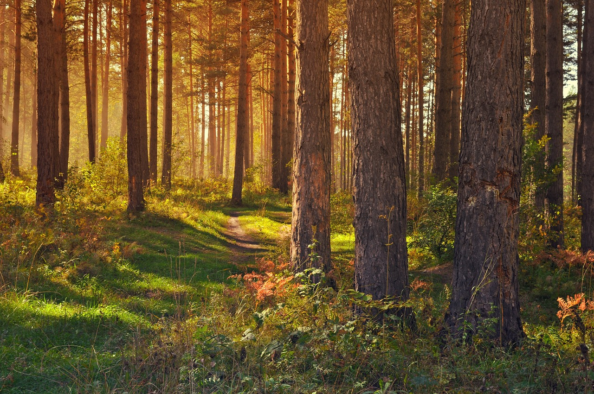

Tervetuloa ympäristöopin pariin!
Ympäristön ymmärtäminen on tärkeää, koska se auttaa meitä tekemään parempia valintoja arjessa ja huolehtimaan luonnosta ympärillämme. Ympäristöoppi antaa meille tietoa siitä, miksi on tärkeää pitää huolta ympäristöstämme.
Ympäristövisat tarjoaa neljä hauskaa peliä, jotka on suunniteltu erityisesti ala-asteikäisille. Näiden pelien avulla voit oppia ympäristön tärkeistä asioista, kuten kierrätyksestä, luonnon kasveista ja eläimistä samalla kun pelaat.
Tutustu sivustoon tarkemmin Info-osiossa tai siirry suoraan pelaamaan. Pelitulokset löytyvät Pelit alta.
Tervetuloa oppimaan ja pelaamaan!
